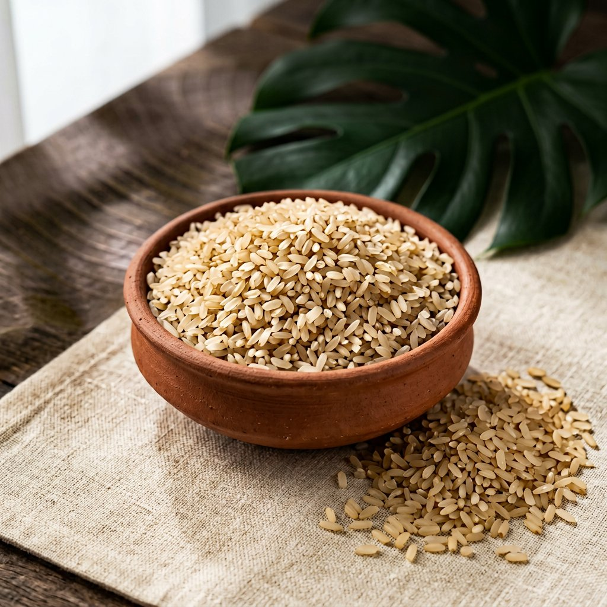

Best Seller Tamil NaduPonni Rice
The everyday favourite of Tamil kitchens. Bold, non-sticky grains that hold their shape and soak up sambar, rasam and curd without turning soft.
- Medium–Long Grain
- Parboiled
- Daily Meals
Bulk rateson enquiry
Enquire